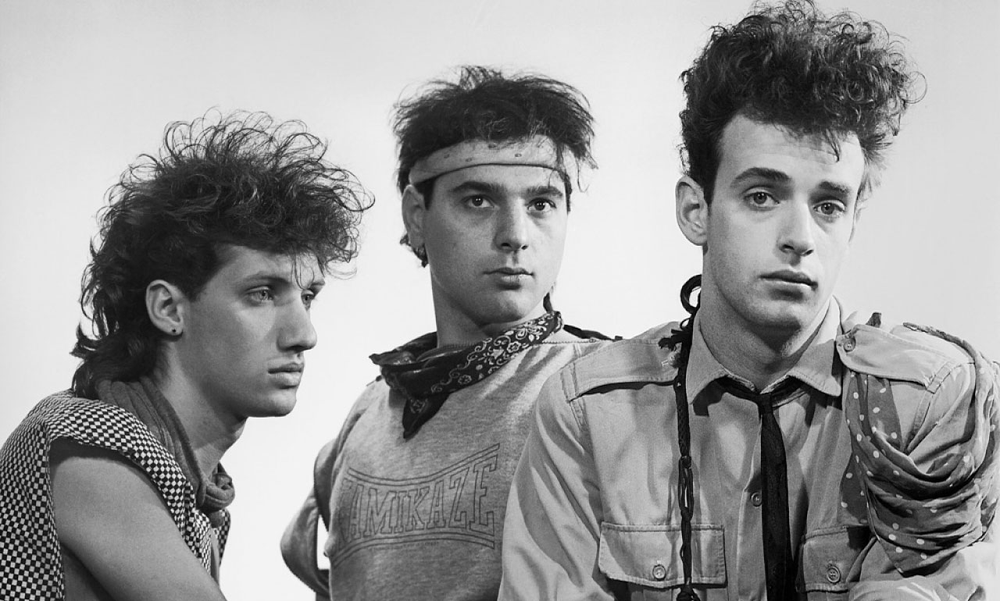
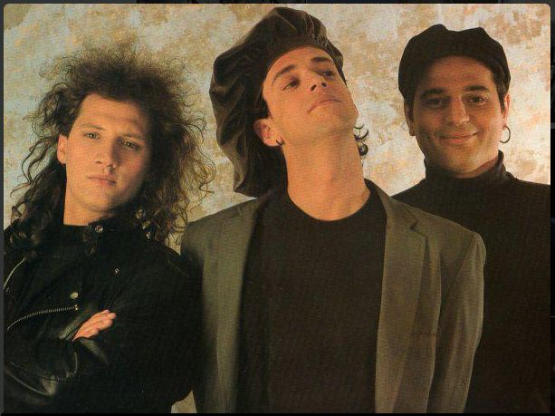
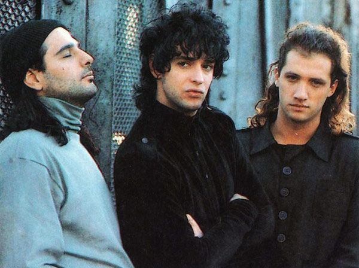
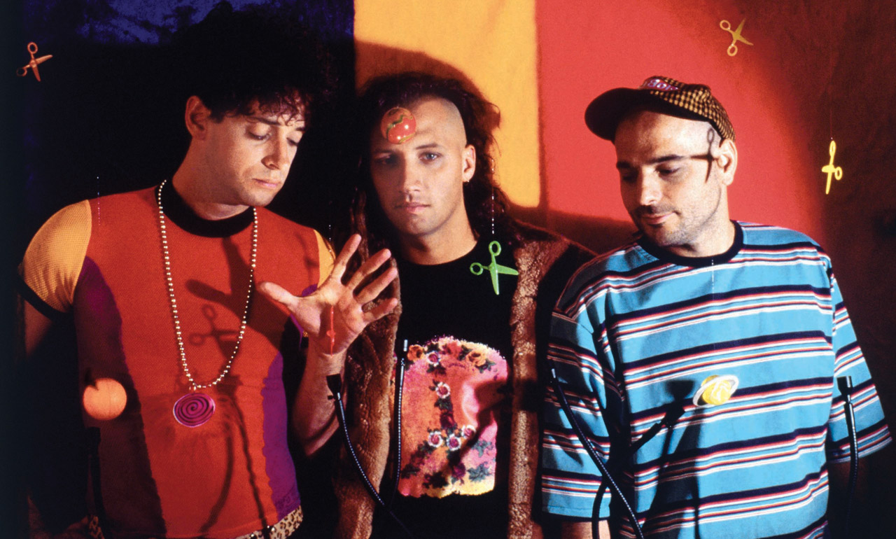
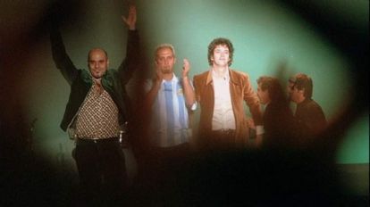
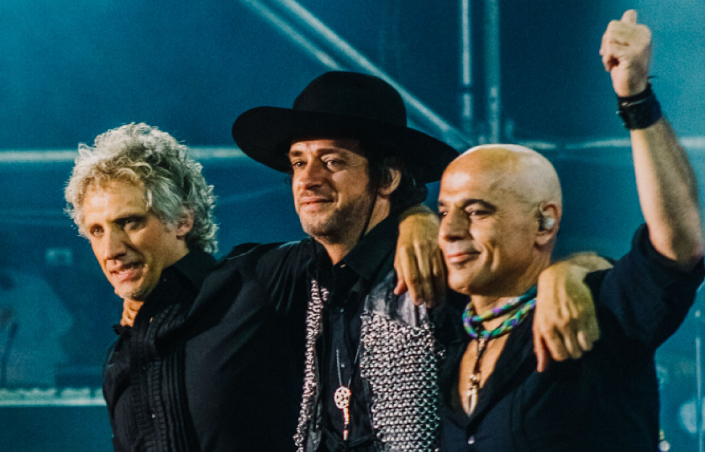

Trayectoria de Soda Stereo
Soda Stereo fue una de las bandas más importantes en la historia del rock en español. El grupo se formó en 1982 en Buenos Aires, Argentina, y estuvo integrado por Gustavo Cerati (voz y guitarra), Zeta Bosio (bajo) y Charly Alberti (batería). Con el paso de los años lograron convertirse en un referente del rock latino y expandir su música por toda América Latina.
Inicios (1982 – 1984)
La banda comenzó tocando en pequeños bares y clubes de Buenos Aires. Sus primeras canciones estaban influenciadas por estilos como el new wave y el post-punk , muy populares durante los años 80. En 1984 lanzaron su primer álbum titulado "Soda Stereo" , el cual incluía canciones como "Te hacen falta vitaminas" y "Sobredosis de TV". Este disco marcó el inicio de su reconocimiento dentro de Argentina.

Éxito en Latinoamérica (1985 – 1989)
A mediados de los años ochenta la banda alcanzó granpopularidad con los álbumes "Nada Personal" (1985) y "Signos" (1986). Durante esta etapa comenzaron a realizar giras internacionales y a conquistar países como Chile, México, Colombia y Perú. Gracias a su estilo innovador y su energía en el escenario, Soda Stereo se convirtió en uno de los primeros grupos de rock en español en lograr éxito masivo en toda Latinoamérica.

Consagración internacional (1990 – 1992)
El lanzamiento del álbum "Canción Animal" en 1990 consolidó definitivamente a la banda. Este disco incluyó una de sus canciones más famosas: "De Música Ligera", considerada un verdadero himno del rock en español. A partir de este momento, Soda Stereo comenzó a llenar grandes estadios y a ser reconocido como uno de los grupos más influyentes de la región.

Experimentación musical (1992 – 1995)
En los años noventa la banda empezó a experimentar con nuevos estilos musicales. Con álbumes como "Dynamo" (1992) y "Sueño Stereo" (1995) incorporaron sonidos alternativos, electrónicos y experimentales.

Separación y despedida (1997)
En 1997 la banda anunció su separación y realizó su concierto de despedida en el Estadio Monumental de Buenos Aires. Durante ese último show, Gustavo Cerati pronunció la famosa frase "¡Gracias totales!" , la cual se convirtió en una de las frases más recordadas del rock latino.

Reencuentro y legado (2007)
En 2007 los integrantes se reunieron nuevamente para realizar la gira "Me Verás Volver" , la cual fue un gran éxito en toda América Latina. Aunque la banda dejó de tocar regularmente, su música sigue siendo escuchada por millones de fans y continúa influyendo en nuevas generaciones de artistas

Datos adicionales:
- La gira marcó el regreso de la banda tras su separación en 1997.
- Inició el 19 de octubre de 2007 en Buenos Aires, Argentina.
- Recorrió varios países de América Latina y Estados Unidos.
- Fue una de las giras más exitosas del rock en español.
- Las entradas se agotaron rápidamente en múltiples ciudades.
- Incluyó sus más grandes éxitos como "De Música Ligera".
- Finalizó el 21 de diciembre de 2007 en Buenos Aires.